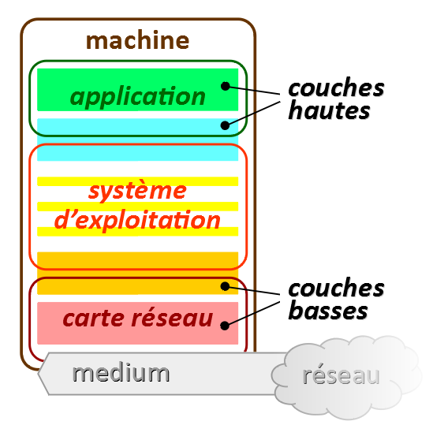
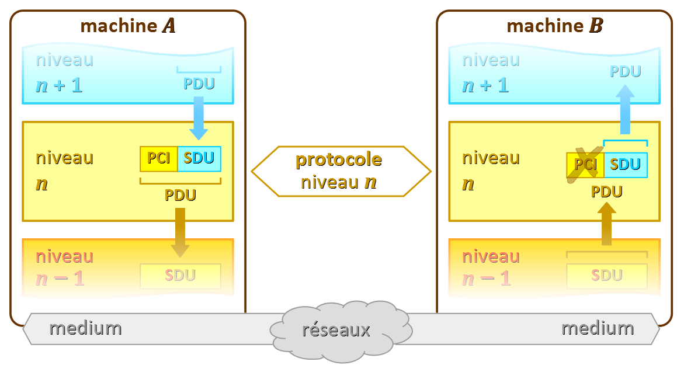
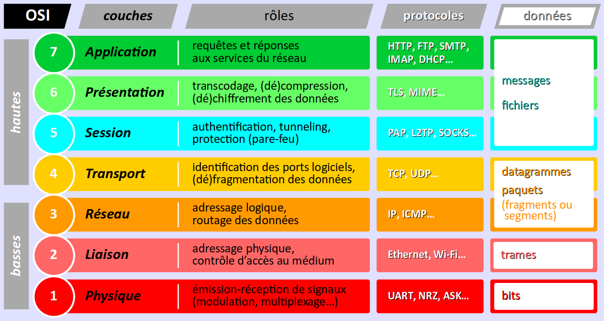

On rappelle (cf. chap. R1‑I ) qu'un protocole de communication informatique est un algorithme implémenté dans un composant logiciel qui cadence les échanges de données entre deux ou plusieurs machines dans un contexte spécifique (dialogue client‑serveur, etc.). Par « machines », on entend non seulement les équipements matériels mais aussi l'ensemble des logiciels (circuits électroniques microprogrammés, système d'exploitation, applications) qui permettent aux machines de communiquer.
On a également vu que dans les réseaux informatiques, les échanges de données entre machines sont trop complexes à mettre en œuvre pour pouvoir être conformés à un seul protocole. On implémente donc ce qu'on appelle des piles de protocoles, c'est‑à‑dire plusieurs protocoles qui s'enchaînent pour mener de bout en bout les communications. Par exemple, la pile de protocole « HTTP - TCP/IP - Ethernet 802.3 » est une solution minimale pour permettre à un logiciel navigateur installé sur un poste de travail hébergé dans un réseau local de lire des pages web stockées dans un serveur distant sur un réseau public. De plus, en arrière‑plan de ces protocoles essentiels en opèrent d'autres – DNS, DHCP… – pour faciliter l'usage des réseaux.
Présentes dès l'origine des communications informatiques, les piles de protocoles n'ont cessé depuis de se complexifier, au point qu'il est devenu indispensable de disposer d'outils de représentation de leurs différentes « strates logicielles ». C'est ainsi qu'est apparue la notion de modèle en couches, avec :
- d'abord le modèle TCP/IP construit sur la base des protocoles existants du même nom ;
- puis, le modèle OSI qui n'est basé sur aucun protocole existant mais se veut générique.
Bien que simpliste et insuffisant pour décrire les aspects complexes de la technologie réelle et évolutive des protocoles, le modèle OSI s'est quand même peu à peu imposé comme une « grille de lecture » de référence pour présenter les piles de protocoles. Par exemple, c'est bien ce modèle OSI (et non pas TCP/IP) que le constructeur Cisco utilise comme outil de description dans son logiciel Packet Tracer (cf. TP R1‑1 ).
Ce chapitre a donc pour principaux objectifs :
- de décrire les principes généraux de la structuration en couches des piles de protocoles ;
- de dresser un panorama des protocoles de l'Internet ;
et ce dans la perspective d'acquérir le recul nécessaire pour l'étude détaillée de chaque protocole qui sera proposée dans les parties suivantes de ce module de formation. En effet, aucun protocole n'est réellement indépendant des autres :
- les protocoles de la couche la plus haute utilisent les services des protocoles des couches inférieures ;
- les protocoles de ces couches inférieures ont très peu d'intérêt en eux‑mêmes, ils sont essentiellement conçus pour servir aux protocoles de la couche la plus haute.
La structuration logicielle en couches
Principes généraux
De manière générale, les protocoles de communication sont structurés en plusieurs couches logicielles (en anglais, software layers) qu'on présente comme un empilage hiérarchique par niveaux d'abstraction, tels que :
- la couche de plus haut niveau est intégrée à l'application qui initie la communication (navigateur web, client de messagerie, serveur…) ;
- la couche de plus bas niveau met œuvre les signaux physiques sur le médium de transmission de données.
On parle de pile de protocoles W (protocol stack) pour désigner un tel ensemble de logiciels.
Les interactions entre les couches logicielles d'une pile de protocoles suivent le schéma bidimensionnel suivant :
- abstraitement, on considère qu'un protocole opère horizontalement dans une seule couche, entre deux machines communicantes – typiquement, un client et un serveur ;
- mais concrètement, un protocole fonctionne verticalement, c'est‑à‑dire en interagissant avec les couches immédiatement supérieure et inférieure via des commandes logicielles appelées primitives de service (au sens où ces couches voisines rendent ou demandent un service de communication).
Si l'on considère chacune machine isolément, on peut parler de couches « homologues », pour désigner leurs couches de même niveau.
Les modèles en couche sont conçus pour qu'en principe, tout protocole appartient à une couche bien précise, tout en sachant qu'il peut bien évidemment y avoir plusieurs protocoles dans une même couche.
Ainsi, il est communément admis que les nombreux protocoles dits applicatifs HTTP, FTP, SMTP… appartiennent tous à la couche la plus haute (celle qui est en interaction avec l'utilisateur de la machine).
Mais pour certains protocoles, il est difficile de concevoir qu'ils appartiennent à une seule couche.
- Le protocole ICMP W (internet control message protocol) qui permet de mettre en œuvre une commande
pingW peut sembler opérer au dessus du protocole IP, de niveau 3 dans le modèle OSI. C'est pourquoi certains auteurs le positionnent entre les niveaux 4 et 3 du modèle OSI (cf. par exemple W). - Le protocole ARP W(address resolution protocol) est considéré comme opérant entre les niveaux 3 et 2 du modèle OSI.
Principes de la communication verticale
Au cours de la mise en œuvre d'un protocole entre deux machines communicantes, l'une émettrice et l'autre réceptrice, le protocole opère des traitements logiciels sur des éléments de données (en anglais, data units, abrégé DU).
En adoptant un point de vue vertical, ces traitements apparaissent « inverses » selon la machine considérée. Ils consistent en de l'encapsulation-décapsulation de données, de la segmentations-désegmentation en paquets, etc.
Ainsi, lors d'une transmission de données depuis une machine A émettrice à destination d'une machine B réceptrice, un protocole de niveau n d'encapsulation-décapsulation procède de la manière suivante :
- Sur la machine A, le protocole de niveau n reçoit un élément de donnée appelé SDU W (service data unit) transmis par un autre protocole, de niveau n + 1, via une primitive de service. On parle également de charge utile (en anglais payload W). 
- Sur la machine B, ce même PDU arrive en étant transmis par le protocole de niveau n − 1 à celui de niveau n.
Principe d'indépendance des couches
En principe, les piles de protocoles sont conçues pour que chaque couche soit indépendante des autres couches. Concrètement, cela signifie que, pour opérer, un protocole de niveau n ne doit pas avoir besoin d'extraire – et encore moins modifier – des données d'un SDU transmis par un protocole de niveau n + 1.
Dans la pratique, les concepteurs de protocoles ont parfois été contraints de déroger au principe d'indépendance pour répondre aux défits de la croissance très rapide de l'Internet.
Ainsi en va‑t‑il des techniques de NAT (network address translation, cf. chap. R1‑III ) : au niveau 3, pour router sur l'Internet un datagramme IP émis par une machine dotée d'une adresse privée, le routeur‑passerelle modifie le numéro de port logiciel qui étiquette le PDU généré par le protocole du niveau 4 (UDP, par exemple).
Le « modèle » TCP/IP
La pile de protocoles Internet W dite « TCP/IP » peut être considérée aujourd'hui comme un modèle de référence simplifié à 4 couches (cf. figure ci‑contre).
Dans ce modèle, les couches ne sont pas numérotées mais désignées par leur nom :
Application, Transport, Internet et Accès réseau
Quant aux protocoles TCP (transmission control protocol) et IP (Internet protocol), ils ne sont que les deux plus emblématiques de la pile. En fait, il y en a beaucoup d'autres (Ethernet, etc.).
Historiquement, cette pile de protocoles n'a pas été conçue comme un modèle, mais elle s'est imposée comme telle en raison de son indiscutable succès opérationnel. En effet :
- le réseau Arpanet W qui employait initialement le protocole NCP W, a fini par adopter en 1983 les protocoles TCP et IP, aboutissant à la première ébauche de l'Internet que l'on connaît aujourd'hui ;
- parallèlement, de nombreux réseaux associés à des protocoles concurrents (RNIS, X.25…) ont fini par être complètement abandonnés, malgré leur ancienneté, en raison de leurs faibles performances, comparées à celles de TCP/IP.
Toutefois, TCP/IP ne constitue pas un modèle au sens fort du terme – c'est‑à‑dire un outil de représentation générique, au même titre que le modèle OSI – dans la mesure où il ne s'agit que d'une formalisation de l'agencement d'une pile de protocoles existante.
Par ailleurs, le « modèle » TCP/IP n'est pas exempt de défauts. En particulier, sa couche la plus basse – Accès réseau – est très insuffisamment détaillée. Elle ne permet pas de révéler l'empilement des protocoles qui opèrent à son niveau.
Le modèle OSI
Le modèle OSI W (open systems interconnection) est une norme internationale établie par l'ISO pour la spécification de piles de protocoles des réseaux informatiques.
Constitué de 7 couches (cf. figure ci‑dessous), il est aujourd'hui largement employé comme modèle de référence pour décrire la pile de protocoles de l'Internet.
Introduit dès les années 1970 alors que foisonnaient différentes piles de protocoles pour mettre en œuvre les communications dans les réseaux informatiques, le modèle OSI est le fruit d'une histoire mouvementée.
- Ne proposant aucune solution logicielle opérationnelle, il n'a pas acquis la crédibilité nécessaire pour jouer un rôle de spécification pour la pile de protocoles de l'Internet.
- Ses couches hautes ont pu être considérées au début comme trop détaillées pour analyer le fonctionnement de nombreux protocoles.
- Même l'introduction de la couche Liaison (niveau 2), inexistante dans le modèle TCP/IP, n'a pas suffi pour détailler correctement les protocoles à l'œuvre dans la technologie Ethernet.
Dans l'idéal, le modèle OSI aurait pu être le point de départ d'une rétro‑conception de la pile de protocoles TCP/IP pour en corriger certains défauts. Mais il n'a suscité l'adhésion, ni des concepteurs de TCP/IP, ni des opérateurs de télécommunication de l'époque, qui ont privilégié d'autres solutions technologiques opérationnelles (comme Transpac) – alors que finalement, elles ont disparu.
Le modèle OSI est donc resté un outil de modélisation trop simple (un empilage de couches) dont les principes rigides (notamment l'indépendance des couches) ne permettent pas de détailler finement des techniques complexes comme le NAT (cf. supra ) ou l'ITP W (Internet tunneling protocol).
Malgré ses défauts (simplisme, rigidité, etc.), il reste le moins mauvais modèle pour décrire la pile des protocoles de l'Internet, ce qui explique pourquoi il y est si souvent fait référence.
Certains spécialistes (notamment Andrew Tanenbaum W) proposent un modèle hybride entre le modèle OSI et le modèle TCP/IP. Essentiellement, ce modèle consiste à fusionner dans le modèle OSI les couches 5, 6, et 7.
Cette approche pouvait trouver un sens il y a une quinzaine d'années, lorsque les couches 5 et 6 étaient vides pour de nombreuses applications. Aujourd'hui, avec le recours massif aux protocoles de chiffrement, il est commode de disposer d'au moins d'une couche intermédiaire entre la couche Application et la couche Transport pour y situer ces protocoles.
Le modèle IEEE de la couche liaison
Les protocoles de communication employés au niveau de la couche liaison du modèle OSI ont presque tous été normalisés par IEEE W (Institute of electrical and electronics engineers – cf. chap. R1‑I ).

Cet institut propose en fait un modèle détaillé pour la couche Liaison, en distinguant :
Mais par ailleurs, les normes IEEE de technologies de liaisons (Ethernet, Wi‑Fi… – cf. infra ) couvrent également de nombreux aspects de la couche physique. Il est donc peu aisé d'établir des correspondances claires entre le modèle IEEE et le modèle OSI.
Panorama des protocoles de l'Internet
Le but de cette section est de donner un aperçu global de la pile de protocoles qui permet de mettre en œuvre les échanges de données sur les réseaux informatiques usuels. Qu'ils soient privés ou publics, ces réseaux ont presque tous fini par adopter la technologie logicielle dite TCP/IP employée initialement sur l'Internet.
Sans surprise, on adopte le modèle OSI pour décrire l'agencement de tous ces protocoles.
Distinction des couches hautes et basses
Dans le modèle OSI (cf. la figure supra ), il est d'usage de distinguer les couches dites hautes et celles dites basses. Au delà des considérations hiérarchiques évoquées préalablement , la frontière se justifie au sens où, dans un échange de données entre deux machines terminales A et B (ordinateurs, smartphones, imprimantes, etc.) :
- les couches hautes sont opérées par des composants logiciels installés uniquement sur les machines terminales A et B ; d'un point de vue horizontal, on parle de communication de bout en bout (en anglais end‑to‑end layer) ;
- les couches basses sont opérées par des composants logiciels installés sur les machines terminales A et B mais aussi sur les éventuels nœuds intermédiaires des réseaux par lesquels les données transitent (switchs, routeurs…) ; d'un point de vue horizontal, on peut alors parler de communication de proche en proche.
La figure ci‑dessous illustre de façon simplifiée le cheminement des données échangées entre deux applications (typiquement, un navigateur et un serveur web) exécutées respectivement sur deux machines hébergées dans des réseaux locaux différents.

On peut ainsi visualiser que les switchs et les routeurs embarquent des logiciels de communication jusqu'au niveau 3, donc uniquement situés dans les couches basses du modèle OSI.
Les switchs dits administrables (en anglais, managed), qui permettent notamment de mettre en place des réseaux locaux virtuels (VLAN), opèrent également au niveau 3 du modèle OSI, comme les routeurs.
Protocoles de la couche Application

La couche de niveau 7 dite Application W regroupe tous les protocoles de haut niveau directement mis en œuvre par les applications de communication (navigateur, client de messagerie, etc.) exécutées sur les machines terminales.
Le plus souvent, ces applications opèrent selon un modèle client‑serveur. Les protocoles qu'elles emploient sont systématiquement rattachés à un ou plusieurs ports logiciels (cf. chap. R1‑I ).
Les protocoles les plus importants de la couche Application sont revus en détail dans les différents chapitres de la partie R2 du module.
Applications utilisateurs
Les principales applications de communication sont celles qui répondent aux besoins directs des utilisateurs des machines terminales (poste de travail, smartphone, etc.). Le tableau ci‑dessous recense les catégories d'applications les plus usuelles et les protocoles qu'elles mettent en œuvre.
| Application | Protocole(s) | Nº port(s) |
|---|---|---|
| navigation W | HTTP W (hyper-text transfer protocol) | 80 |
| messagerie W | IMAP W (Internet message access protocol) – courrier entrant SMTP W(simple mail transfer protocol) – courrier sortant |
143 25 |
| partage de ressources W | SMB W (server message block) NFS W (network file system) |
445 2049 |
| transfert de fichiers W | FTP W (file transfer protocol) | 20 (écoute) 21 (données) |
| terminal distant W | Telnet W (terminal network) SSH W (secure shell) | 23 22 |
| audio et video (dont VoIP W) | IAX W (inter‑asterisk exchange) MGCP W (media gateway control protocol)… |
4569 2427 |
Services réseau
On trouve également dans la couche de niveau 7 des protocoles de service dont le rôle est de simplifier l'usage et la gestion des réseaux. Les plus connus sont listés dans le tableau ci‑dessous.
| Application | Protocole(s) | Nº port(s) |
|---|---|---|
| adressage symbolique | DNS W (domain name system) | 53 |
| configuration automatique | BOOTP W (bootstrap protocol) DHCP W (dynamic host configuration protocol) |
67 (serveur) 68 (client) |
| partage du temps UTC | NTP W (network time protocol) | 123 |
| supervision de réseau | SNMP W (simple network management protocol) | 161 & 162 |
Le DNS n'est pas seulement un protocole, c'est un système réparti sur l'ensemble de l'Internet qui met en jeu plusieurs protocoles et qui s'appuie sur de nombreux serveurs publics dédiés (cf. chap. R2‑I ).
Protocoles de la couche Présentation
La couche de niveau 6 dite Présentation W regroupe des protocoles de transcodage, de compression-décompression ou de chiffrement-déchiffrement des données issues ou à destination de la couche Application.
Il est malaisé, dans le cadre de ce cours, de dresser un inventaire représentatif de ces protocoles. On se contente de donner deux exemples emblématiques.
Protocole de chiffrement‑déchiffrement TLS
Le protocole de chiffrement-déchiffrement TLS W (transport layer security) agit comme une sur‑couche logicielle pour de nombreux protocoles applicatifs. Il les transforme en protocoles sécurisés, reconnaissables par l'ajout d'une lettre‑suffixe « S » à leur sigle, comme initiale du qualificatif secure.
Systématiquement, il opère une translation des ports utilisés par ces protocoles (cf. le tableau ci‑dessous qui donne quelques exemples).
| Protocole initial |
Nº port(s) d'origine |
Protocole sécurisé |
Nº port(s) sécurisé |
|---|---|---|---|
| HTTP | 80 | HTTPS | 443 |
| IMAP | 143 | IMAPS | 993 |
| SMTP | 25 | SMTPS | 465 |
| FTP | 20 & 21 | FTPS | 990 & 989 |
Le protocole TLS est parfois considéré comme faisant partie de la couche Application ou de la couche Session, par exemple, ici W.
Mais si l'on consulte la version anglophone de cette page W, on peut lire (03/10/2021) :
Sans chercher à trancher le débat de savoir dans quelle couche considérer le protocole TLS, on peut simplement observer ici un aspect du simplisme du modèle OSI qui ne permet pas de décrire la complexité réelle des piles de protocoles usuels.
Standard de transcodage MIME
Le standard de transcodage MIME W (multipurpose Internet mail extensions) est un système dont l'usage principal est d'étendre les données contenues dans les courriels à d'autres formats d'encodage de caractères que l'ASCII (cf. chap. C3‑VIII C). Il permet ainsi aux utilisateurs des clients de messagerie d'employer des jeux de caractères étendus (cf. chap. C3‑IX C) pour rédiger leurs messages.
Ce transcodage est appliqué comme un protocole à la suite de SMTP qui, lui, ne prend en charge que le jeu de caractères ASCII restreint. Il est également appliqué aux données issues du protocole HTTP, notamment pour les pages de gestion de courriels dites webmail W.
Protocoles de la couche Session
La couche de niveau 5 dite Session W regroupe des protocoles de gestion de haut niveau des mécanismes de connexion entre machines communicant de bout en bout, en complément de ceux de la couche Présentation.
Comme pour la couche Présentation, il est difficile de dresser un inventaire représentatif des protocoles de la couche Session. À titre d'exemples emblématiques, on peut citer :
- le protocole PAP W (password authentication protocol) qui apporte un service d'authentification par mot de passe ;
- le protocole L2TP W (layer 2 tunneling protocol) qui met en place un tunnel de communication chiffré W de haut niveau ; cette technologie logicielle est employée pour la mise en œuvre des réseaux privés virtuels (VPN – cf. chap. R2‑II ) ;
- le protocole SOCKS W (acronyme de socket secured over credential-based kerberos) qui permet d'interposer dans une communication client‑serveur l'intervention d'un logiciel pare‑feu W (firewall) exécuté sur une machine tierce appelée serveur proxy W.
Protocoles de la couche Transport
La couche de niveau 4 dite Transport W regroupe les protocoles principalement chargés d'accomplir la segmentation-désegmentation des données en PDU – usuellement appelés paquets, segments ou fragments – dans la perspective du multiplexage temporel des liaisons sur les réseaux (cf. chap. R1‑I ).
Ils apportent également des fonctionnalités pour :
- la gestion des erreurs, notamment celles relatives à la défectuosité et à la perte de paquets ;
- le contrôle de flux, c'est‑à‑dire au cadencement de l'envoi des paquets.
Les deux protocoles les plus emblématiques de la couche Transport sont TCP et UDP, qui implémentent deux types de communication très différents, détaillés ci‑après.
Au delà de leurs différences, ces deux protocoles ont comme point commun d'ajouter à chaque (SDU) un en‑tête (PCI) comportant le numéro de port de l'application émettrice et de l'application réceptrice de ces données.
Le protocole TCP
Le protocole TCP W (transmission control protocol) est un protocole de transmission bien adapté pour les données de grandes tailles, grâce à la segmentation-désegmentation qu'il met en œuvre.
Opérant en mode connecté et procédant à diverses vérifications, il est réputé fiable. En contre‑partie, il peut être considéré comme lourd et lent.
Plus précisément, le protocole TCP prend en charge, entre l'application émettrice et son homologue réceptrice :
- l'établissement d'une connexion en circuit virtuel W durant tout le temps nécessaire à la transmission des données issues ou à destination de la couche supérieure ; les deux machines sont alors mobilisées par cette transmission, au sens où sur chacune d'elles s'exécute un processus dédié à cette transmission pour le compte des applications émettrice et réceptrice ;
- l'émission-réception des données fragmentés en paquets numérotés – nommés aussi segments – avec vérification de leur intégrité (absence de défauts), de leur intégralité (absence de pertes) lors de la réception, et renouvellement partiel ou total du processus en cas d'erreur ; ces mécanismes justifient qu'il soit qualifié de protocole fiable ;
- la fin de la connexion une fois que toutes les données ont été transmises.
Mais bien évidemment, toutes ces fonctionnalités se payent en termes de durée d'exécution. À volumes de données comparables, il est bien plus lent que son « concurrent » UDP.
Le protocole TCP est donc particulièrement bien adapté aux transmissions de données qui exigent une absence totale d'erreurs (dans un fichier, un seul bit erroné peut être fatal), mais pour lesquelles il n'y a pas de fortes contraintes de délais : les messageries, les transferts de fichiers, les consultations de pages web statiques… et même pour les musiques et les vidéos, dans la mesure où les fichiers peuvent être chargés quelques instant avant d'être joués.
En définitive, TCP est le protocole de transport privilégié pour 90 % du volume des données échangées sur l'Internet.
Le protocole UDP
Le protocole UDP W (user datagram protocol) est un protocole de transport de données dont les PDU, de petite taille (jusqu'à environ 1500 octets), sont appelés appelés datagrammes. Il opère sans segmentation.
Procédant à une simple vérification des en‑têtes par checksum W et opérant en mode non connecté, il réputé non fiable. En contre‑partie, il est léger, donc rapide à mettre en œuvre.
Plus précisément, le protocole UDP met en œuvre, entre l'application émettrice et son homologue réceptrice, des transmissions de données sans connexion préalable (contrairement à TCP), donc sans garantie d'une bonne réception.
Le protocole UDP est particulièrement bien adapté à certaines applications et services :
- qui sont peu gourmandes en volumes de données – DNS, DHCP, NTP (partage du temps Internet), etc. ;
- ou qui sont très contraintes en termes de délais (VoIP, vidéo en direct, etc.) pour lesquels des erreurs d'intégrité sont tolérables ; en effet, dans ces applications, la vitesse de transmission prime sur la résolution des images ou du son (des pixels erronés sur une image sont quasiment indétectables lors du visionnage d'un film).
Un datagramme peut néanmoins être fragmenté par un protocole de niveau inférieur, notamment IP, pour respecter des contraintes de longueur maximale en vigueur sur le réseau.
Protocoles de la couche Réseau

La couche de niveau 3 dite Réseau W regroupe les protocoles chargés du routage des paquets de données sur les réseaux de transport. Pour cela, elle procède à l'étiquetage des paquets avec les adresses logiques des interfaces respectivement émettrice et réceptrice de la communication.
Le routage n'est pas établi à d'avance mais de proche en proche par les tables de routage stockées dans les machines du réseau (principalement les routeurs). Ce système réparti suppose l'adaptation des protocoles à toutes sortes d'architecture de réseaux, et en particulier au fait que ces architectures évoluent en permanence (connexions et déconnexions de machines). C'est pourquoi la couche réseau comprend aussi des protocoles qui assurent la mise à jour automatique des tables de routage.
Le protocole IP
Le protocole emblématique dans la couche Réseau est IP W (Internet protocol). Il coexiste actuellement en deux versions : IPv4 et IPv6 selon le format d'adresses employées (cf. chap. R1‑III ).
Sans entrer dans les détails, le protocole IP consiste :
- sur la machine émettrice, à étiqueter chaque paquet (SDU) issu de la couche transport par un en‑tête (PCI) qui comporte l'adresse IP de l'interface réseau émettrice et celle d'interface réseau destinataire ;
- sur chaque routeur traversé par un paquet, à déterminer l'adresse IP du routeur suivant à qui transmettre ce paquet pour l'acheminer à son destinataire (next hop W).
Comme UDP (cf. supra ), le protocole IP opère en mode non connecté et est réputé non fiable : il ne procède à aucune vérification de la bonne réception des paquets par le destinataire. Mais cela ne pose pas problème dans la mesure où :
- d'une part, les concepteurs d'applications peuvent choisir de recourir au protocole TCP pour garantir une bonne qualité de service ;
- préalablement à une transmission, un autre protocole de niveau 3 – ICMP (cf. infra) – permet de s'assurer qu'une adresse IP destinataire est routable.
Autres protocoles de la couche Réseau
Parmi les autres protocoles de la couche Réseau, on peut citer ICMP W (Internet control message protocol). Il s'agit d'un protocole de service à l'usage des applications pour, à partir d'une machine émettrice, de vérifier qu'une adresse est routable depuis cette machine.
Le protocole ICMP est notament utilisé dans la commande ping qui permet de tester l'accessibilité par le réseau d'une adresse IP ou d'un nom de domaine.
- Sur un poste de travail Windows avec un accès à l'Internet, dans un terminal de commande en ligne, on peut par exemple saisir :
> ping google.com
C:> ping google.com
Envoi d’une requête 'ping' sur google.com [2a00:1450:4007:807::200e] avec 32 octets de données :
Réponse de 2a00:1450:4007:807::200e : temps=17 ms
Réponse de 2a00:1450:4007:807::200e : temps=18 ms
Réponse de 2a00:1450:4007:807::200e : temps=17 ms
Réponse de 2a00:1450:4007:807::200e : temps=17 ms
Statistiques Ping pour 2a00:1450:4007:807::200e:
Paquets : envoyés = 4, reçus = 4, perdus = 0 (perte 0%),
Durée approximative des boucles en millisecondes :
Minimum = 17ms, Maximum = 18ms, Moyenne = 17ms
C:>
google.com est donc bien accessible via l'Internet depuis ce poste de travail. - pour y mettre fin, il suffit d'interrompre la commande par un
Ctrl C(comme pour toute commande en ligne) ; - pour spécifier un nombre déterminé de PDU – par exemple, 3 – il faut saisir l'option
-c 3(cpour « count ») avant l'adresse IP ou le nom de domaine à tester.
$ ping -c3 google.com PING google.com(par21s20-in-x0e.1e100.net (2a00:1450:4007:818::200e)) 56 data bytes 64 octets de par21s20-in-x0e.1e100.net (2a00:1450:4007:818::200e) : icmp_seq=1 ttl=117 temps=18.8 ms 64 octets de par21s20-in-x0e.1e100.net (2a00:1450:4007:818::200e) : icmp_seq=2 ttl=117 temps=18.7 ms 64 octets de par21s20-in-x0e.1e100.net (2a00:1450:4007:818::200e) : icmp_seq=3 ttl=117 temps=18.8 ms --- statistiques ping google.com --- 3 paquets transmis, 3 reçus, 0 % paquets perdus, temps 2003 ms rtt min/avg/max/mdev = 18.735/18.786/18.821/0.036 ms $
Le protocole ICMP sert également à quantifier la fluidité des communications entre deux machines, en chronométrant le temps nécessaire pour obtenir un PDU d'acquittement à partir du moment où un PDU de requête est émis.
Protocoles de la couche Liaison
La couche de niveau 2 dite Liaison W regroupe les protocoles qui permettent à deux voire plusieurs nœuds adjacents d'un réseau d'établir une liaison logique entre les interfaces réseau constituant ces nœuds.
Comme toute couche dite basse, la couche Liaison est implémentée de façon répartie sur tous les nœuds du réseau et opère de proche en proche.
À ce niveau, on parle de trames pour désigner les PDU.
La couche Liaison présente une grande difficulté d'étude car elle comprend certains protocoles transversaux – Ethernet, Wi‑Fi… – qui chevauchent aussi la couche Physique.
De plus, il ne s'agit pas de simples protocoles, mais de véritables technologies qui sont spécifiées, non pas par des RFC émanant de l'IETF, mais par l'IEEE (cf. chap. R1‑I ). Elles sont regroupées dans des standards de cet organisme sous la référence commune 802.
Et comme exposé supra , l'IEEE décompose le niveau 2 du modèle OSI en deux sous‑couches : LLC et MAC.
Les protocoles de la couche Réseau sont revus en détail aux chapitres R3‑III (Ethernet – norme 802.3), R3‑IV (Wi‑Fi – norme 802.11) et R3‑V (WPAN – norme 802.15).
La sous‑couche LLC
La sous‑couche LLC W (logical link control) est conçue comme une interface commune entre la couche Réseau et les différentes implémentations de la sous‑couche MAC, lesquelles sont spécifiques aux différentes technologies employées sur les liaisons (Ethernet, Wi‑Fi, etc.).
Cette sous‑couche est définie dans le standard IEEE 802.2, devenu obsolète et remplacé par la norme ISO/IEC 8802‑2:1998.
La sous‑couche LLC a pour principale fonction d'opérer le multiplexage‑démultiplexage sur la liaison afin d'optimiser l'accès au médium par les différents protocoles de la couche liaison. Elle est néanmoins optionnelle en technologie Ethernet.
La sous‑couche LLC est également conçue pour effectuer du contrôle de flux et du contrôle d'erreurs. Toutefois, ces mécanismes ne sont pas exploités pour les PDU issus du protocole TCP ou des protocoles applicatifs qui prennent déjà en charge ces aspects (DHCP, DNS, etc.) ; sinon, ils feraient double emploi.
Par ailleurs, il faut noter que la sous‑couche LLC n'a fait l'objet d'aucune évolution depuis 2003. Son groupe de travail au sein de l'IEEE est « démantelé » (disbanded) .
Néanmoins, au sein du modèle OSI, la sous‑couche LLC garde un intérêt. Ainsi, on peut considérer que certains protocoles non définis par l'IEEE s'y inscrivent. À titre d'exemple, on peut citer PPP W (point‑to‑point protocol) utilisé dans la boucle locale historique des RTC, aujourd'hui exploitée pour la connexion entre les box d'abonnés et les points de raccordement du fournisseur d'accès.
La sous‑couche MAC
La sous‑couche MAC W (medium access control) est conçue comme une interface entre le niveau « logique » et le niveau physique des transmissions sur un médium entre deux machines (voire plus en cas de broadcast).
Elle présente des particularités pour chacune des technologies de liaison utilisées, lesquelles sont spécifiées dans un standard dédié : 802.3 pour Ethernet, 802.11 pour Wi‑Fi, etc.
La sous‑couche MAC remplit plusieurs fonctions :
- la fragmentation-défragmentation en trames des segments issus de la couche Réseau ;
- l'étiquetage sur chaque trame de l'adresse physique dite MAC (cf. chap. R1‑III ) de l'interface émettrice et de l'interface destinataire ;
- le filtrage assuré par les switchs des trames en fonction des adresses MAC pour les diffusions qui ne sont pas de type broadcast (donc, en unicast, transmission à la seule interface destinataire) ;
- le contrôle d'erreurs sur les trames reçues, par calcul d'une somme de contrôle (checksum) ;
- l'accès au médium, avec en particulier la gestion des collisions dans le cas des technologies sans‑fils, où le médium est commun.
Le protocole ARP
Le protocole ARP (address resolution protocol) est un protocole indispensable au bon fonctionnement de la couche Liaison, même s'il n'en fait pas exclusivement partie – on peut considérer qu'il se situe à cheval avec la couche Réseau.
Le protocole ARP est mis en œuvre sur chaque nœud du réseau pour lui permettre de déterminer l'adresse MAC correspondante à une adresse IP parmi ses nœuds voisins lorsqu'il doit lui envoyer une ou plusieurs trames encapsulant un datagramme issu de la couche Réseau.
Chaque machine tient donc à jour pour chacune de ses interfaces une table de correspondance dite table ARP qui est mise à jour au gré des besoins par le protocole ARP.
Sur un poste de travail Linux ou Windows, il est possible de consulter cette table via la commande :
> arp -a (a pour all)
Par d'autres commandes, on peut éventuellement ajouter ou supprimer des entrées sur cette table. Pour plus de détails, il suffit de consulter l'aide en ligne ou le manuel de la commande arp.
Protocoles de la couche Physique

La couche de niveau 1 dite Physique W permet de générer‑réceptionner sur les différents médias des signaux en grandeurs physiques pour transmettre les bits constituant les trames issues de la couche Liaison.
À ce niveau, il n'est pas pertinent de parler de protocoles mais plutôt de techniques d'encodage et de modulation. Pour des questions de rapidité et de fiabilité, ces techniques sont implémentées par des composants ou circuits électroniques spécialisés intégrés sur les interfaces réseau.
Les techniques mises en œuvre dans la couche Physique sont très dépendantes non seulement de la nature du médium de transmission (conducteurs électriques, fibres optiques, champ électromagnétique…) mais aussi de la technologie générale de la liaison employée : liaison xDSL , Ethernet, Wi‑Fi, etc.
Transversalement, un paramètre essentiel est la longueur de la liaison qui, lorsqu'elle est grande, induit des problèmes d'affaiblissement du signal et détermine ainsi des choix technologiques. En particulier, pour les liaisons filaires à paires torsadées, on fait les choix suivants.
- Jusqu'à quelques dizaines de mètre, on opère en transmission en bande de base W – c'est‑à‑dire sans modulation ; néanmoins :
- les niveaux de tension employés doivent parfois être moins élevés – par exemple, ±1 V pour l'Ethernet 100BASE‑TX – que ceux usuellement employés dans les cartes électroniques (0 ‑ 5 V), et il faut recourir à des câbles blindés contre les perturbations électromagnétiques ;
- des techniques d'encodage – NRZ W (non‑return‑to‑zero), Manchester W, Miller W permettent d'optimiser la fiabilité et les débits de transmission.
- Au delà, c'est‑à‑dire pour les liaisons à grande distance (entre bâtiments, boucle locale, etc.), il devient obligatoire d'utiliser des techniques de modulation W en portant le signal sur des bandes de fréquence adaptées. Coûteuses en traitements, les diverses techniques de modulation – ASK W (amplitude‑shift keying), PSK (phase‑shift keying) W, FSK W (frequency‑shift keying) – et surtout leurs combinaisons permettent en contre‑partie d'augmenter les débits de transmission de façon considérable :
- par le codage de plusieurs bits sur un seul motif modulé ;
- par des techniques de multiplexage fréquentiel exploitant davantage la bande passante des conducteurs.
Ainsi, les transmission sur la boucle locale dite VDSL W opérées sur les liaisons historiques des RTC (câbles dit « PTT » constitués de 2 ou 4 paires de fils cuivre faiblement torsadées, dont une seule est utilisée dans la pratique) mettent en œuvre aujourd'hui des techniques de modulation quadratique d'amplitude et de phase ou QAM W et de multiplexage OFDM W (orthogonal frequency‑division multiplexing). Elles permettent d'atteindre des débits jusqu'à plus de 30 Mb/s ! Pour mesurer toute l'importance de ces techniques de traitement du signal, il faut se souvenir qu'avec les anciens modems analogiques, sur les mêmes supports physiques, le débit plafonnait à 56 kb/s.
Les techniques de la couche Physique sont revues en détail au chapitre R3‑VII .